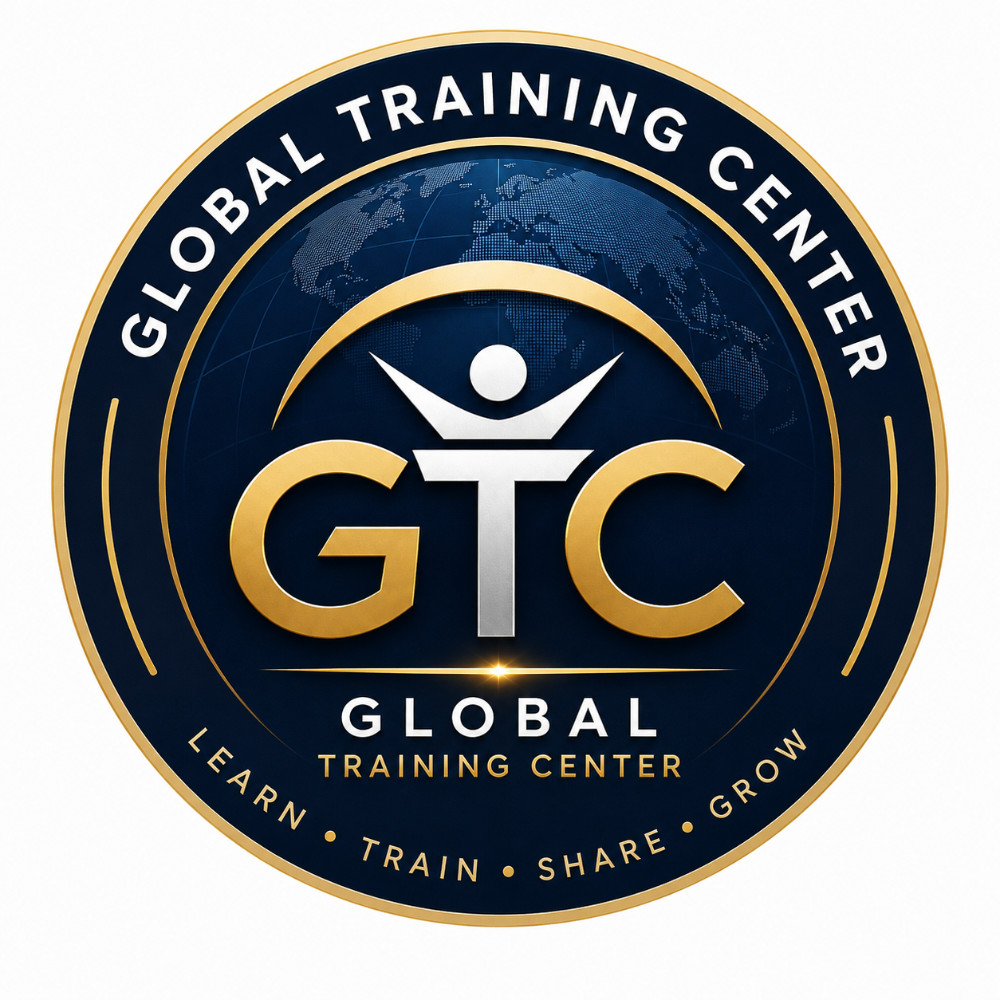

GLOBAL TRAINING CENTERIPMA OFFICIAL TRAINING PLATFORM지도자 과정·인증도장 신청
희망 지도자 과정 또는 인증도장을 신청하면 IPMA 본부에서 자격요건, 교육·검정 일정과 발급기준을 확인하여 안내합니다. 인증도장은 공인 지도자가 있는 도장만 등록할 수 있습니다.

GLOBAL TRAINING CENTERIPMA OFFICIAL TRAINING PLATFORM희망 지도자 과정 또는 인증도장을 신청하면 IPMA 본부에서 자격요건, 교육·검정 일정과 발급기준을 확인하여 안내합니다. 인증도장은 공인 지도자가 있는 도장만 등록할 수 있습니다.